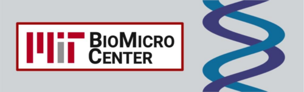
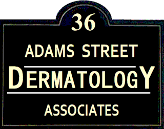

At Northeastern, I've completed 3 co-op experiences. For my first co-op, I worked at Brigham and Women's Hospital in the Neurology & Neurosurgery ICU as a Patient Care Assistant. My role involved helping patients with tasks of daily living, taking vital signs, and assisting nurses. For my second co-op, I worked at the BioMicro Center at MIT as a Bioinformatics Intern. My role involved writing scrips to aid in data mining, acquisition, and deposition. For my third co-op, I worked as a Medical Assistant and Scribe at Adams Street Dermatology. I was responsible for rooming patients and obtaining detailed medical histories, assisting in surgical procedures, and developed skills such as phlebotomy and suture removal. These experiences were all crucial to solidifying my desire to practice patient-centered medicine.
On campus, I am involved in multiple extracurricular organizations. As a volunteer for Hearts for the Homeless (H4H), I provide weekly blood pressure screenings at Woods Mullen Shelter and Southampton Street Shelter Clinic, as well as provide heart health education to the unhoused population. I also serve on the executive board as Treasurer for H4H, where my role is to create fundraising opportunities, oversee the annual budget, and supervise volunteer sessions. I a also a member of Boston Health Initiative, an organization focused on health equity in underserved Boston communities. Additionally, I am a member of Nu Rho Psi, Northeastern's chapter of the National Honor Society for Neuroscience. Lastly, I have been an active member of Alpha Chi Omega sorority since joining my freshman year.


Email: licciardello.f@northeastern.edu
LinkedIn